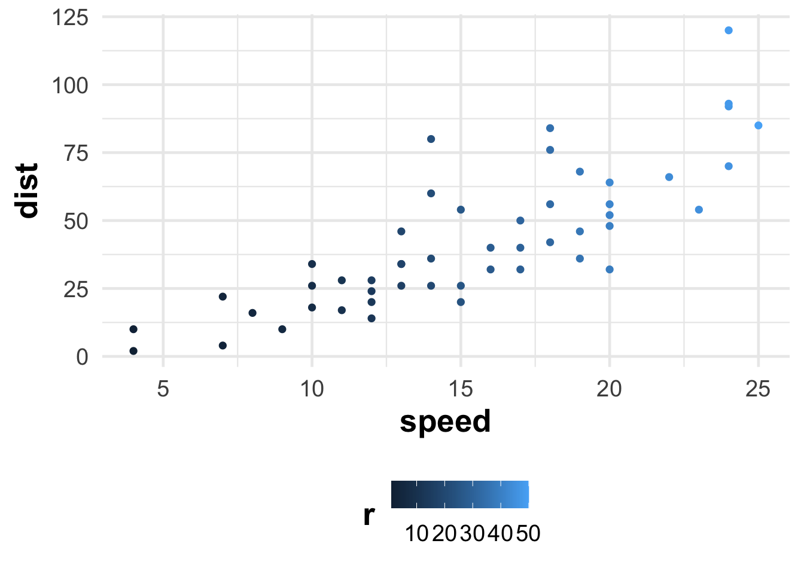
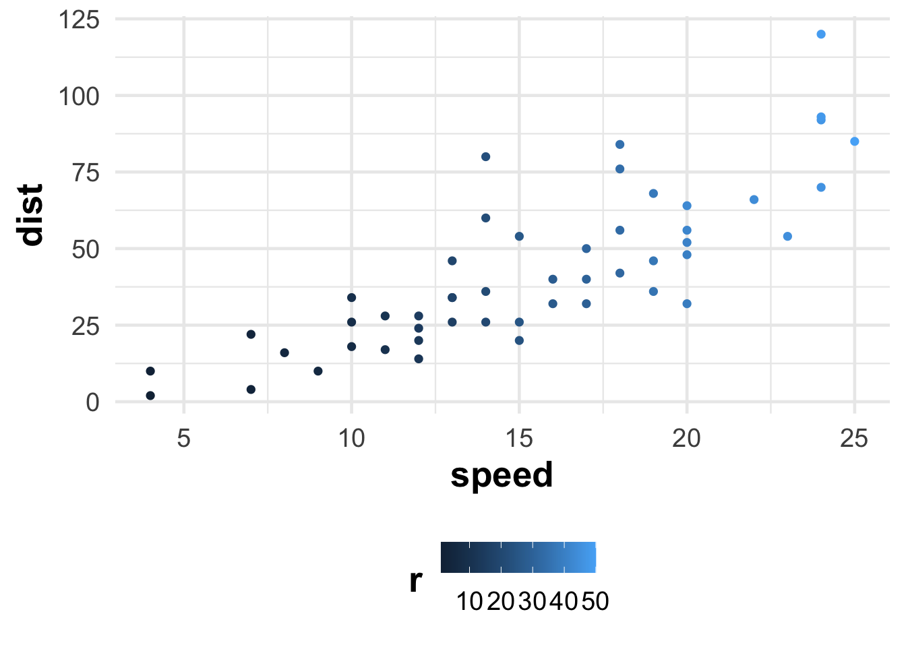
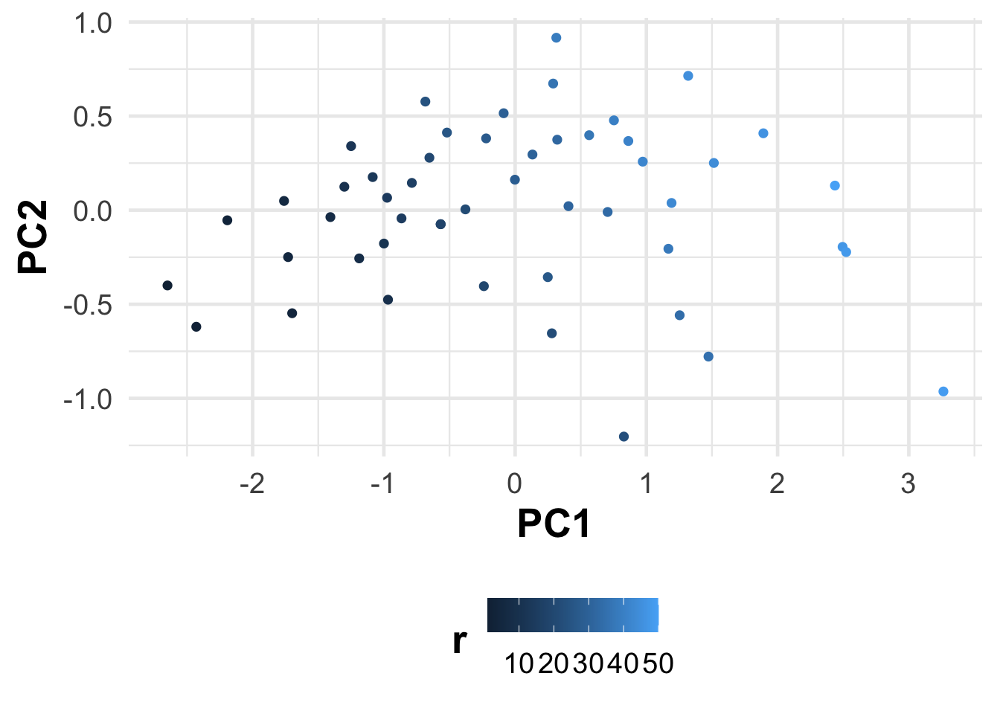
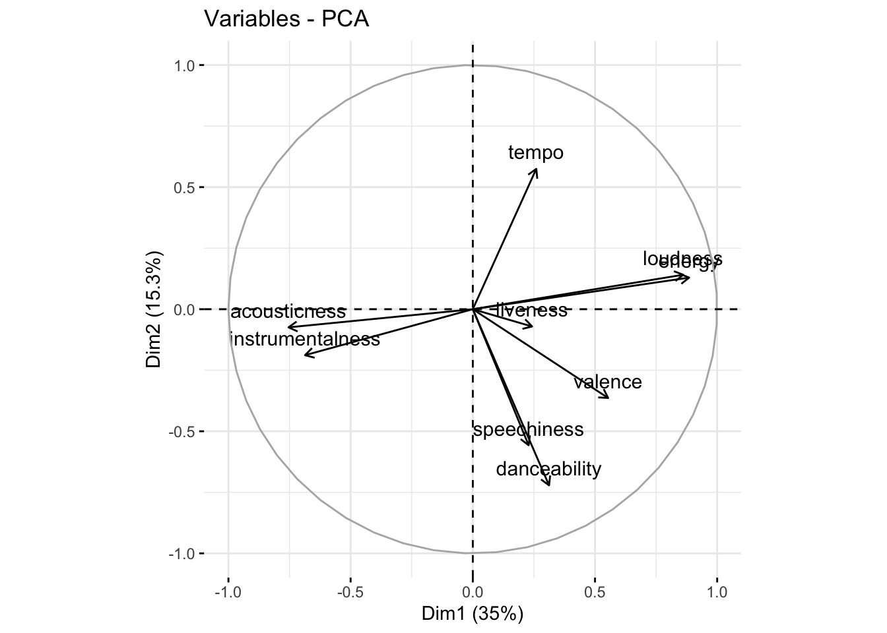
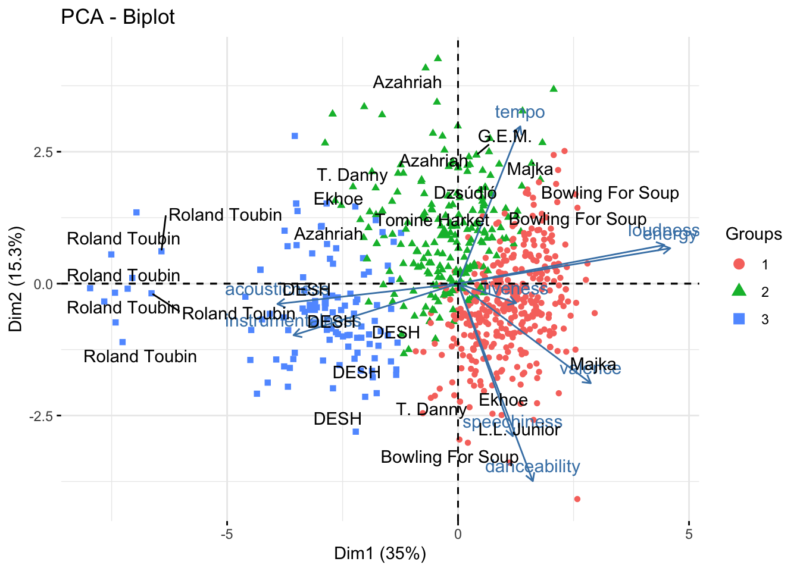

cars %>%
mutate(r = row_number()) %>%
ggplot() +
aes(speed, dist, color = r) +
geom_point() 
Readings and class materials for Tuesday, November 7, 2023
Given are multiple variables that correlate with each other. The aim of principal component analysis is to compress correlated variables into uncorrelated principal components. Principal components are expressed as linear combinations of standardized variables. We retain a reduced number of variables compared to the original dataset (dimension reduction), while maximizing the explained variance for a given dimensionality.
It is quite simple (and less useful) to demonstrate the matter in two dimensions. Let us consider the simplest cars table, in which the speed of the car and the stopping time are recorded. Let us colorize it according to the order of the measurement, so that we can track where each one has ended up.
cars %>%
mutate(r = row_number()) %>%
ggplot() +
aes(speed, dist, color = r) +
geom_point() 
It is evident that the two variables strongly co-move, thus the first dimension would be the speed at which we are referring to (essentially the vicinity of the trend line), while the second dimension would be the deviation from it (in terms of how quickly it moved and how much it is below/above the trend).
# Apply PCA using the prcomp function
pca_result <- prcomp(cars, scale. = TRUE)pca_result$x %>%
as_tibble() %>%
mutate(r = row_number()) %>%
ggplot() +
aes(PC1, PC2, color = r) +
geom_point() 
Easy… The principal components are the eigenvectors of the covariance matrix of the variables. The eigenvalues are the variances of the principal components. The first principal component is the eigenvector with the largest eigenvalue, the second principal component is the eigenvector with the second largest eigenvalue, and so on. The first principal component explains the largest amount of variance in the data, the second principal component explains the second most variance, and so on. The principal components are orthogonal to each other.
Okay…
In linear algebra, for a given square matrix \(A\), an eigenvector \(\nu\) is a non-zero vector that, when multiplied by \(A\), results in a scalar multiple of itself. This scalar is known as the eigenvalue \(\lambda\). Mathematically, this relationship is expressed as:
\[A⋅\nu=\lambda⋅\nu\]
[,1] [,2] [,3]
[1,] 2 0 0
[2,] 0 3 0
[3,] 0 0 4# Calculate eigenvalues and eigenvectors
eigen_result <- eigen(A)
eigen_resulteigen() decomposition
$values
[1] 4 3 2
$vectors
[,1] [,2] [,3]
[1,] 0 0 1
[2,] 0 1 0
[3,] 1 0 0# Eigenvalues
eigen_values <- eigen_result$values
# Eigenvectors
eigen_vectors <- eigen_result$vectors
A %*% eigen_vectors[, 1] == # %*% matrix multiplication
eigen_values[1] * eigen_vectors[, 1] [,1]
[1,] TRUE
[2,] TRUE
[3,] TRUEPC are not a statistical model… Its just a rotation of the axis to maximize the variance and represent the data with orthogonal features.
Using PCA or other dimension reduction tool might be motivated by several reasons:
Pattern recognition: we want to identify the underlying structure of the variables. An example to this is the analysis of the yield curve, where we want to identify the co-movement present in the data. We can also create latent variables (the PCA scores) that are not directly observable, but they can be inferred from the data (example: Digitalisation and business performance - focusing on Hungarian manufacturing firms).
Dimension reduction: we want to reduce the number of variables in the dataset, while retaining as much information as possible. This is useful when we have a large number of variables and we are not able to interpret the results, we face time or space complexity (the model estimation takes to much time or memory) issues, or multicollinearity (the variables are highly correlated with each other).
Noise reduction: we want to reduce the noise present in the data. Consider using dimension reduction if the out-of-sample estimation is not as good as the in-sample estimation and you have many variables.
Visualization: we want to visualize the data in a lower dimensional space. This is useful when we have a large number of variables and we want to visualize the data in a 2D or 3D space (for instance biplots).
library(rvest)
yields_df <- map_dfr(1:25, .progress = TRUE, ~ {
read_html(str_c("https://home.treasury.gov/resource-center/data-chart-center/interest-rates/TextView?type=daily_treasury_yield_curve&field_tdr_date_value=all&page=", .x)) %>%
html_table() %>%
first() %>%
select(
date = Date, matches("\\d Mo"), matches("\\d\\d Mo"), matches("\\d Yr"), matches("\\d\\d Yr"),
- contains("YR", ignore.case = FALSE)
) %>%
mutate(
date = lubridate::mdy(date),
across(where(is.character), as.numeric)
)
})| DATE | 1 MO | 2 MO | 3 MO | 4 MO | 6 MO | 1 YR | 2 YR | 3 YR | 5 YR | 7 YR | 10 yr | 20 yr | 30 yr |
|---|---|---|---|---|---|---|---|---|---|---|---|---|---|
| 1991-03-15 | NA | NA | 5.98% | NA | 6.10% | 6.30% | 7.01% | 7.26% | 7.73% | 7.98% | 8.10% | NA | 8.30% |
| 1991-03-18 | NA | NA | 6.03% | NA | 6.13% | 6.36% | 7.09% | 7.35% | 7.79% | 8.04% | 8.15% | NA | 8.34% |
| 1991-03-19 | NA | NA | 6.08% | NA | 6.23% | 6.48% | 7.22% | 7.48% | 7.93% | 8.14% | 8.25% | NA | 8.42% |
| 1991-03-20 | NA | NA | 6.07% | NA | 6.18% | 6.44% | 7.20% | 7.46% | 7.88% | 8.09% | 8.20% | NA | 8.37% |
| 1991-03-21 | NA | NA | 6.06% | NA | 6.15% | 6.39% | 7.13% | 7.40% | 7.82% | 8.04% | 8.16% | NA | 8.34% |
| 1991-03-22 | NA | NA | 6.06% | NA | 6.16% | 6.37% | 7.13% | 7.39% | 7.82% | 8.03% | 8.13% | NA | 8.33% |
yields_df %>%
select(- date) %>%
select(where(~ any(!is.na(.x)))) %>%
drop_na() %>%
princomp() %>%
loadings() %>%
unclass() %>%
data.frame() %>%
rownames_to_column("variable") %>%
select(1:5) %>%
gt_finalise() %>%
fmt_number(
-1,
force_sign = TRUE,
decimals = 2
) %>%
data_color(
columns = 3, target_columns = 3,
colors = c("red3", "steelblue")
)| Loadings of the first 4 principle components of the yield curve | ||||
| Variable | Comp 1 | Comp 2 | Comp 3 | Comp 4 |
|---|---|---|---|---|
| 1 Mo | +0.32 | +0.38 | +0.26 | +0.45 |
| 2 Mo | +0.32 | +0.35 | +0.21 | +0.21 |
| 3 Mo | +0.32 | +0.31 | +0.18 | −0.08 |
| 6 Mo | +0.32 | +0.23 | +0.04 | −0.38 |
| 1 Yr | +0.32 | +0.10 | −0.18 | −0.57 |
| 2 Yr | +0.31 | −0.05 | −0.43 | −0.09 |
| 3 Yr | +0.31 | −0.12 | −0.45 | +0.10 |
| 5 Yr | +0.29 | −0.22 | −0.26 | +0.27 |
| 7 Yr | +0.27 | −0.29 | −0.08 | +0.33 |
| 10 Yr | +0.25 | −0.36 | +0.16 | +0.08 |
| 20 Yr | +0.21 | −0.40 | +0.39 | −0.05 |
| 30 Yr | +0.20 | −0.36 | +0.44 | −0.28 |
In the following section, we will be utilizing the Spotify API service to retrieve data on some Hungarian artists. But what is an API? An API is a service that allows an application to communicate with other applications. APIs can be private, accessible only to a specific application, or public, accessible to anyone. The Spotify API is public, thus accessible to anyone. To use APIs, it is generally necessary to have an API key provided by the service provider. We can set the API key in our code using the Sys.setenv() function. The Spotify API key can be obtained from the Spotify for Developers website. After obtaining the key, we can set it as an environmental variable using the following code.
library(spotifyr)
Sys.setenv(SPOTIFY_CLIENT_ID = 'xxx')
Sys.setenv(SPOTIFY_CLIENT_SECRET = 'xxx')The functions Sys.setenv and Sys.getenv enable us to set and retrieve environmental variables. The advantage of this is that within a given project, our private keys (login credentials) can be stored in a file (.Renv).
Sys.setenv(mypassword = "password") # you won't include this in your code
Sys.getenv("mypassword")[1] "password"The plan is to analyze the numbers of the most listened artists based on the weekly top list on YouTube, and their respective characteristics that we can obtain through the Spotify API. The definition of the variables can be accessed here: https://developer.spotify.com/documentation/web-api/reference/get-audio-features.
hun_music_df <- c("Azahriah", "Desh", "Valmar", "Young Fly", "Bruno x Spaco", "T. Danny",
"KKevin", "ByeAlex és a Slepp", "L.L. Junior", "BSW", "ekhoe", "Dzsúdló",
"Follow The Flow", "Roland", "Nótár Mary", "Tomi", "G.w.M", "Majka") %>%
map_dfr(get_artist_audio_features, .progress = TRUE, include_groups = "single")hun_music_df %>%
glimpse()Rows: 721
Columns: 40
$ artist_name <chr> "Azahriah", "Azahriah", "Azahriah", "Azah…
$ artist_id <chr> "6EIriUxo7vznEgJtTDlXpq", "6EIriUxo7vznEg…
$ album_id <chr> "1bP0ww7Dq2vnYkzryXtet8", "6ZO1hIeCfQ8nea…
$ album_type <chr> "single", "single", "single", "single", "…
$ album_images <list> [<data.frame[3 x 3]>], [<data.frame[3 x …
$ album_release_date <chr> "2023-09-26", "2023-08-24", "2023-08-24",…
$ album_release_year <dbl> 2023, 2023, 2023, 2023, 2023, 2023, 2023,…
$ album_release_date_precision <chr> "day", "day", "day", "day", "day", "day",…
$ danceability <dbl> 0.615, 0.678, 0.668, 0.711, 0.810, 0.676,…
$ energy <dbl> 0.6900, 0.6250, 0.6770, 0.6910, 0.6740, 0…
$ key <int> 0, 1, 3, 4, 11, 9, 7, 8, 1, 10, 2, 2, 9, …
$ loudness <dbl> -7.392, -8.855, -8.724, -8.622, -7.816, -…
$ mode <int> 1, 0, 0, 0, 0, 0, 0, 0, 1, 1, 0, 0, 1, 0,…
$ speechiness <dbl> 0.1430, 0.1200, 0.2360, 0.0459, 0.1440, 0…
$ acousticness <dbl> 0.5990, 0.4960, 0.3040, 0.7150, 0.7010, 0…
$ instrumentalness <dbl> 7.82e-04, 1.68e-03, 3.24e-03, 1.50e-01, 3…
$ liveness <dbl> 0.1810, 0.2950, 0.1190, 0.2540, 0.0950, 0…
$ valence <dbl> 0.2960, 0.3610, 0.5810, 0.6560, 0.2420, 0…
$ tempo <dbl> 175.892, 109.980, 163.934, 98.002, 103.09…
$ track_id <chr> "4MQDC8hquSlvTBq8gMoPPo", "2IetMd5ZFurl1s…
$ analysis_url <chr> "https://api.spotify.com/v1/audio-analysi…
$ time_signature <int> 4, 4, 4, 4, 4, 4, 4, 4, 4, 4, 4, 4, 4, 4,…
$ artists <list> [<data.frame[1 x 6]>], [<data.frame[2 x …
$ available_markets <list> <"AR", "AU", "AT", "BE", "BO", "BR", "BG…
$ disc_number <int> 1, 1, 1, 1, 1, 1, 1, 1, 1, 1, 1, 1, 1, 1,…
$ duration_ms <int> 220227, 273818, 158048, 171428, 125825, 3…
$ explicit <lgl> FALSE, TRUE, TRUE, FALSE, TRUE, FALSE, FA…
$ track_href <chr> "https://api.spotify.com/v1/tracks/4MQDC8…
$ is_local <lgl> FALSE, FALSE, FALSE, FALSE, FALSE, FALSE,…
$ track_name <chr> "valami amerikai", "ceremónia", "vicc", "…
$ track_preview_url <chr> "https://p.scdn.co/mp3-preview/0ef5d31ad9…
$ track_number <int> 1, 1, 2, 3, 4, 5, 1, 1, 1, 1, 2, 3, 4, 5,…
$ type <chr> "track", "track", "track", "track", "trac…
$ track_uri <chr> "spotify:track:4MQDC8hquSlvTBq8gMoPPo", "…
$ external_urls.spotify <chr> "https://open.spotify.com/track/4MQDC8hqu…
$ album_name <chr> "valami amerikai", "tripq", "tripq", "tri…
$ key_name <chr> "C", "C#", "D#", "E", "B", "A", "G", "G#"…
$ mode_name <chr> "major", "minor", "minor", "minor", "mino…
$ key_mode <chr> "C major", "C# minor", "D# minor", "E min…
$ popularity <int> 63, 66, 61, 64, 60, 61, 56, 50, 55, 48, 6…factoextra::fviz_pca_var(fit)
Why not to combine the PCA with the clustering results? We can do this by creating a biplot.
factoextra::fviz_pca_biplot(fit, habillage = cluster_res, geom.ind = c("point")) +
ggrepel::geom_text_repel(
data = hun_music_df %>%
bind_cols(fit$x) %>%
group_by(artist_name) %>%
sample_n(6),
aes(PC1, PC2, label = artist_name),
)